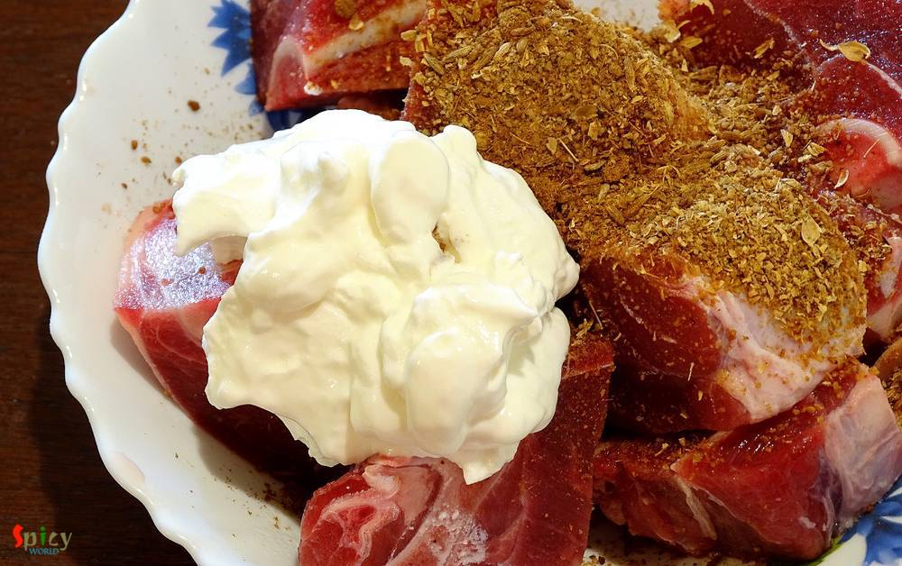
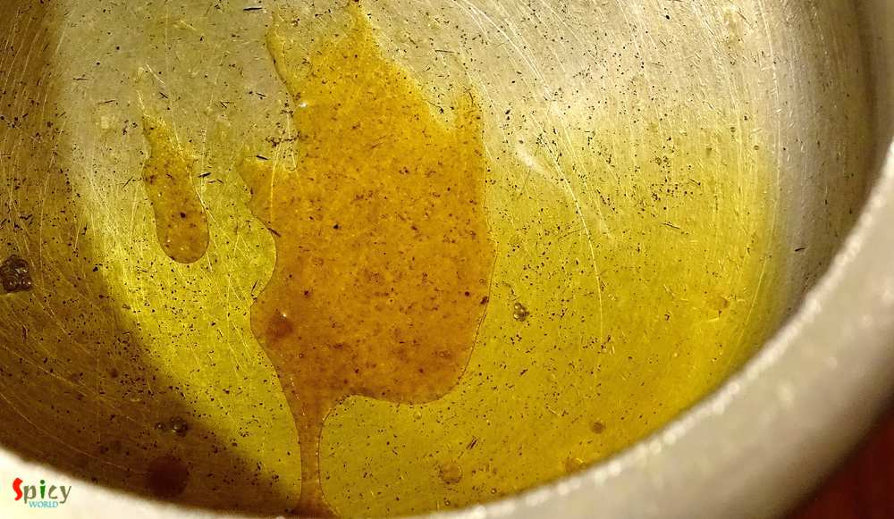
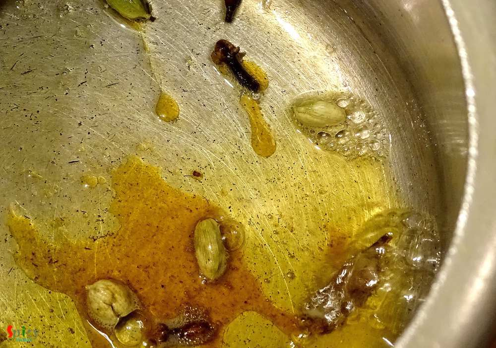
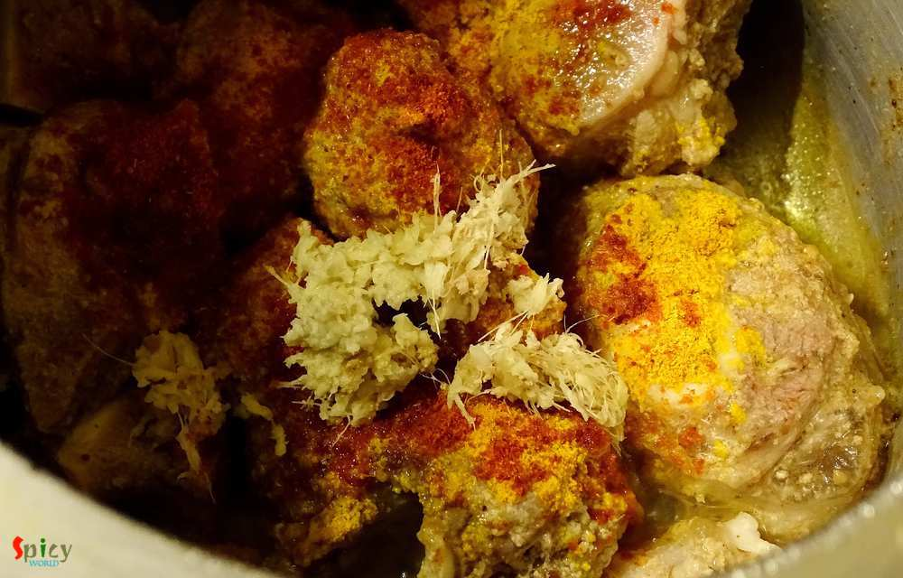
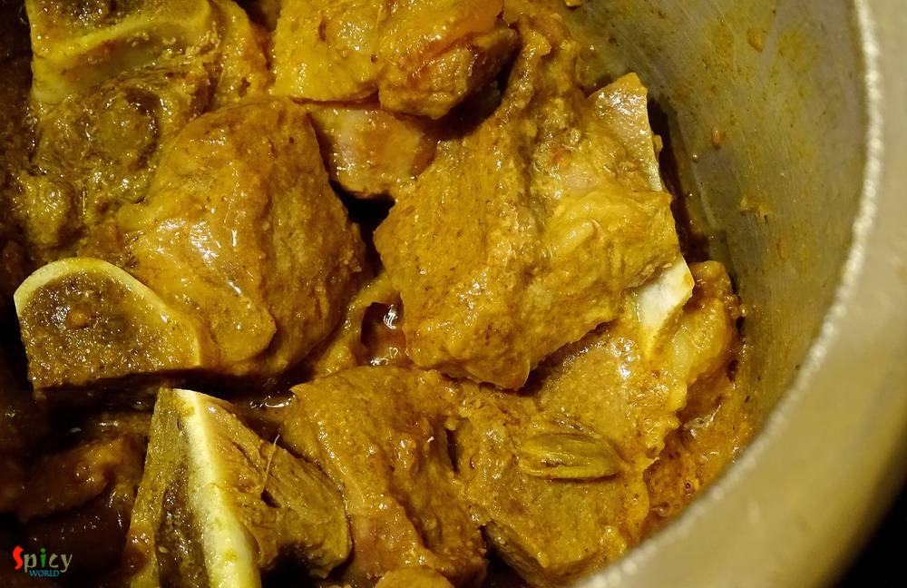
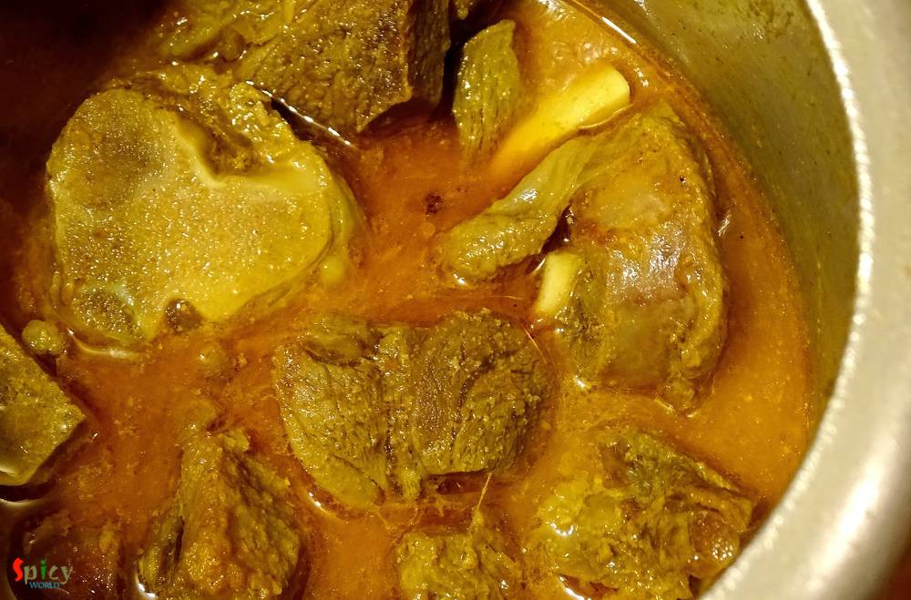
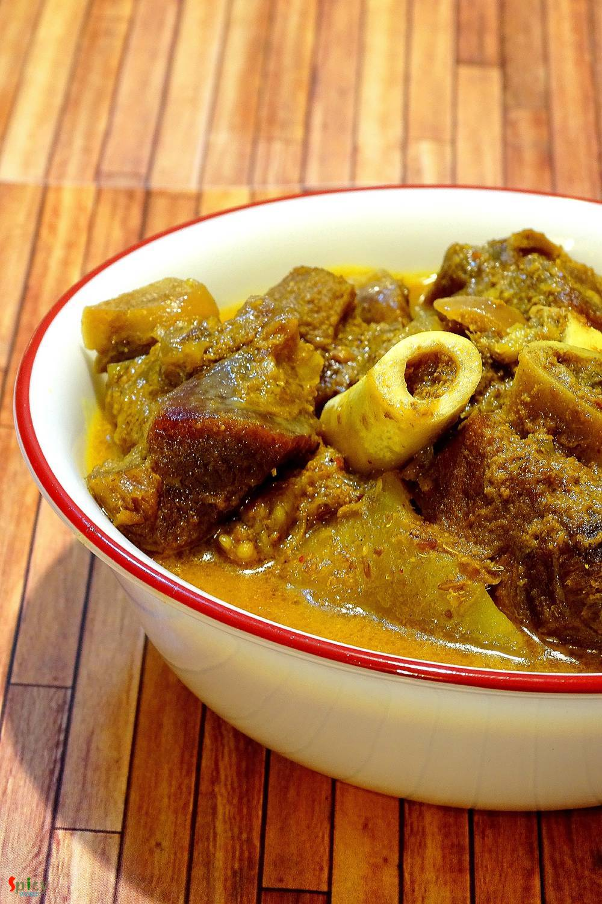

Simple and Easy Recipes
Vegetarian Mutton Curry / Niramish Mangshor Jhol
© 2016 Spicy World, Published on: Apr 18, 2016
The name sounds odd ? Well, I am not crazy, we call this mutton curry vegetarian because it has no onion and garlic. The food we usually offer to our god / godess is called 'bhog' which never contains onion and garlic. During 'kalipuja' or diwali, we Bengalis make this vegetarian mutton curry with the meat of 'pathaboli' (ritual). The taste of this curry is suprisingly delicious, even if there is no onion and garlic. It's a very authentic Bengali lunch maincourse item which you can serve with steamed rice. The recipe is very easy but the taste is unbeatable.

Ingredients
- 10 - 12 pieces of mutton with bone.
- 4 - 5 Tablespoons of yogurt.
- 1 Tablespoon of roasted cumin powder.
- 1 Tablespoon of roasted coriander powder.
- 1 Teaspoon of ginger paste.
- Salt and sugar.
- 1 Teaspoon of turmeric powder.
- 1 Teaspoon of red chilli powder.
- 2 green chilies.
- Whole spices (3 green cardamom, 4 cloves, 1 small cinnamon stick)
- 3 - 4 Tablespoons of mustard oil.
- Pinch of asafoetida / hing.
- Pinch of garam masala powder.
- Water.


Steps
Marinate the mutton with yogurt, cumin powder and coriander powder. Keep it in the fridge for 4 to 5 hours.
Heat oil in a pan.
Add 1 Teaspoon of sugar in the hot oil and caramalize it.
Then add hing / asafoetida and all the whole spices. Saute for few seconds.
Add the marinated mutton. Cook in high flame for 10 minutes.
Then add ginger paste, salt, turmeric powder and red chilli powder. Mix well.
Cook the mutton on medium flame for another 15 minutes. The meat will release some water.
Then add a cup of water and cook until the mutton becomes soft.
Lastly sprinkle some garam masala powder and green chilies. Simmer for few minutes then serve.
Your vegetarian mutton curry is ready.
Serve this hot with some steamed rice.
")